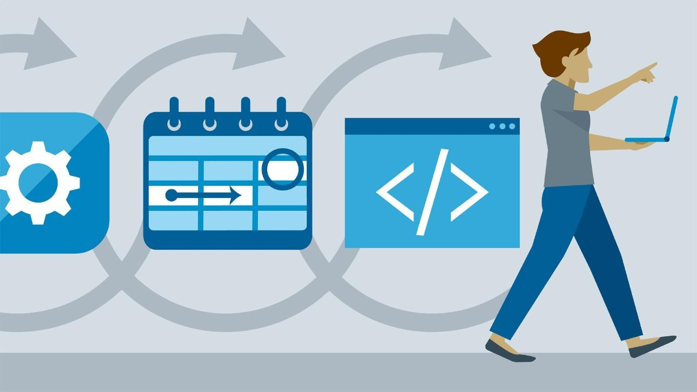

מפתח תוכנה
פיתוח תוכנה הוא תרגום הצרכים של משתמש או של יעד שיווקי למוצר תוכנה[1][2]. פיתוח תוכנה הוא ברוב המקרים פיתוח מוצר
חדש, המורכב מהנדסת תוכנה במשולב עם מחקר, ולעיתים גם עם שיווק[3].
ישנן מתודולוגיות שונות לפיתוח תוכנה, חלקן מתבססות על פיתוח מתמשך של התוכנה, ואילו אחרות מתבססות על פיתוח בחלקים.
רוב המתודולוגיות כוללות את צירוף של המרכיבים הבאים כחלק משלבי פיתוח התוכנה:
+ מחקר שוק
+ איסוף דרישות לפתרון עסקי מוצע
+ ניתוח הבעיות
+ קביעת תוכנית או עיצוב לפתרון תוכנה
+ מימוש התוכנה
+ בדיקות תוכנה
+ פריסה
+ תחזוקה ותיקון באגים
אל שלבים אלו מתייחסים לעיתים בהכללה כמחזור פיתוח תוכנה (SDLC; software development lifecycle). גישות שונות
בפיתוח תוכנה מיישמות את שלבים אלו בסדר שונה, או שונות בזמן המוקדש לכל אחד מהשלבים. רמת הפירוט של התיעוד הנוצר
בכל אחד מהשלבים גם הוא עשוי להשתנות. כל אחד מהשלבים יכול להיעשות בתורו (מפל מים; waterfall) או עשויים לחזור על
עצמם במספר סבבים או איטרציות (כגון Extreme Programming). גישה של פיתוח אקסטרים לרוב תכלול פחות השקעה בתכנון
ותיעוד, ויותר זמן בתכנות ובפיתוח בדיקות אוטומטיות. כמו כן גישה כזו מעודדות בדיקות רציפות במהלך מחזור פיתוח
התוכנה, ושמירה על מוצר עובד כל העת. גישה של מפל מים מנסה להעריך את מרבית הסיכונים ולתכנן תוכנית מפורטת של התוכנה
לפני התחלת המימוש (הקידוד), ונמנעת משינויי עיצוב משמעותיים ותכנות מחדש בשלבים מאוחרים של מחזור פיתוח התוכנה.
לכל אחת מן המתודולגיות ישנם מגוון יתרונות וחסרונות, והגישה העדיפה לפתרון בעיה לרוב תלויה בסוג הבעיה. אם הבעיה
מובנת היטב וניתן לתכנן פתרון מראש גישה של מפל מים עשויה להיות עדיפה. לעומת זאת אם הבעיה ייחודית ומבנה פתרון
התוכנה איננו קל לתכנון, עשוי מודל האקסטרים להיות עדיף.
למה כדאי לי ללמוד?
היום תוכנה היא כמעט התשובה להכל. כל רעיון שיש לכם לייעול החיים השגרתיים האישיים או העסקיים, יכול לבוא לידי ביטוי
ולהיות מיושם באמצעות תוכנה מתאימה. ישראל הפכה בשנים האחרונות למעצמת אפליקציות שימושיות, ואתם יכולים לקחת חלק
בהתפתחות עכשווית זו.
אפשרויות השיווק של מוצרי תוכנה גדלו בעקבות החיבור שנעשה בין האינטרנט לתעשיית הסלולר ועקב הופעתן של חנויות תוכנה
ואפליקציות אייפון מבית אפל ברשת האינטרנט.
עולם התוכנה הוא עולם דינמי מהיר, המשנה צורה בכל שנה או שנתיים. אם אתם אוהבים חידושים וחשים בטוב בסביבה מתפתחת,
אם אתם מרגישים צביטה בלב כשמופיע פיתוח חדש שיכולתם לחשוב עליו לפני כן או שברצונכם להיות חלק ממנו, לכו ללמוד
תוכנה. התחום רווי ביצירתיות, בסקרנות, בחדשנות וביוזמות מרתקות, וטמון בו פוטנציאל אדיר של שינוי פני האנושות
והעולם. לפיכך, גם אם אתם חולמים על שינוי לטובה בתחומים חברתיים, כלכליים, תרבותיים, מדיניים - תזדקקו רק לרעיון
טוב ולשליטה בשפות הפיתוח כדי להביא בשורה חדשה לעולם.
